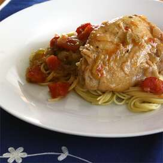

La deliciosa sajta

la sajta es otro delicioso platillo propio de los andes bolivianos
es el unico plato que puede comerse con el pollo bien cocinado a la olla
ingredientes
- pollo por su puesto
- agua
- arbejas
- sobre todo cebolla
- al igual que el thimpo, se coloca agua a la olla
- se hace cocer el pollo
- se hace el ahogado
- y se sirve en un plato plano